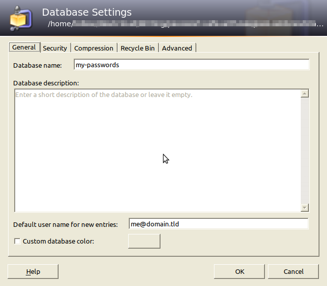
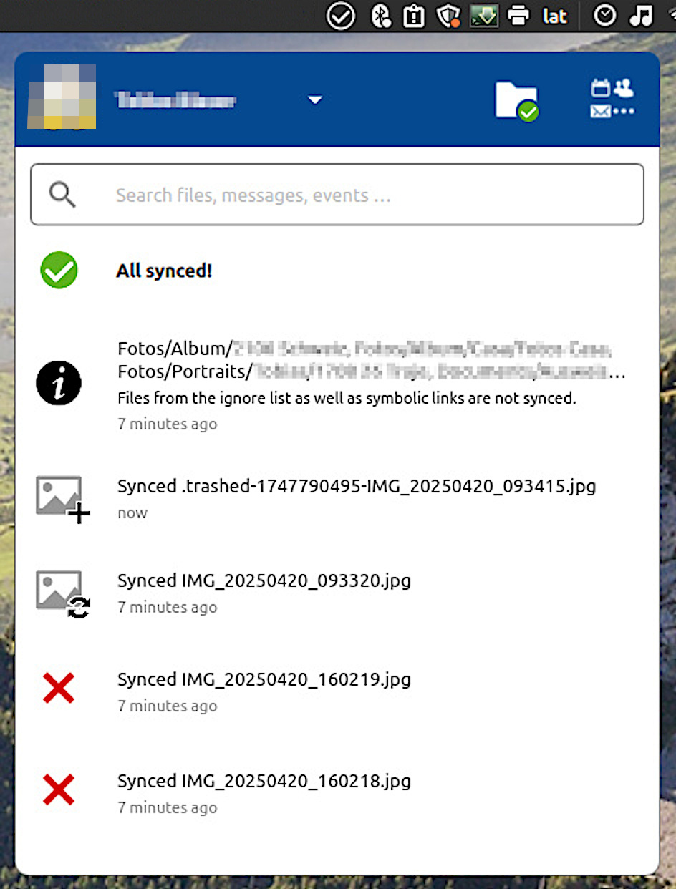

KeePass 🙵 Nextcloud
La última clave que necesitarás recordar
KeePass 🙵 Nextcloud
쯈uién soy?
linkedin.com/in/tobias-blaser-578388139쯇orqué tenemos claves?
쯅o sería más sencillo sin claves?
쯇orqué tenemos claves?
- Llaves de nuestra casa: Solo puede entrar quienes tienen la llave
- Claves son como llaves virtuales
- Pretegemos a nuestra casa virtual con claves:
- El móvil o la computadora
- El homebanking
- Cuentas en redes sociales
- ...
Qué critico son mis cuentas?
쯈ue pasaría si mi vecino tendría la clave de mi homebanking?
쯈ué critico son mis cuentas?
-
Medio: Cuentas que no permiten hacer cambios críticos
Pedidos Ya, EdeNor, Coto, ...
-
Alto:
Cuentas que manejan dinero o permiten hacer cambios críticos
Mercadopago, Afip, Anses, ...
쯈ué critico son mis cuentas?
mail, móvil, authenticador, ...
쮺칩mo protegemos nuestras cuentas?
쯉irve la fecha de cumpleaños de mi marido como pin para mi móvil?
쮺칩mo protegemos nuestras cuentas?
- Medio: PIN, clave simple
- Alto: Clave + segundo factor
- Crítico: Clave compleja + segundo factor o token de hardware
쮻칩nde guardamos todas estas claves?
쮸notado en un papelito baja el teclado?
쮻칩nde guardamos todas estas claves?
- Anotado en un papel en un lugar seguro o en la caja fuerte
- En el llavero del sistema operativo
- En una nube especial para claves
- En un tesoro digital...
...como KeePass
KeePass
쯈ué es KeePass?
- Es un gestor de contraseñas
- Permite almacenar usuario, contraseña, página web, etiquetas y adjuntos
- Puede generar claves
- Es extensible por plugins
- Existe para Linux, Windows, Mac, Android, iOS, web y otros sistemas
쮺칩mo instalar KeePass?
Linux: Desde software manager


쮺칩mo instalar KeePass?
Windows/Mac: descargar desde
keepass.info/download.html

쮺칩mo instalar KeePass?
Google Play Store:
keepass2android.keepass2android

쮺칩mo crear un nuevo tesoro de claves?

쮺칩mo crear un nuevo tesoro de claves?

쮺칩mo agregar una clave?

쮺칩mo agregar información adicional?
쮺칩mo generar claves?
쮺칩mo copiar claves?
쮺칩mo sincronizamos un tesoro de claves a otro dispositivo?
쮼n un archivo de texto en Dropbox?
쮺칩mo sincronizamos un tesoro de claves a otro dispositivo?
- Copiar el archivo por USB o Bluetooth a otro dispositivo
- Sincronizarlo con un programa por USB, por ejemplo rsync
- Sincronizarlo por una nube pública
- Sincronizarlo por una nube privada...
...como por ejemplo Nextcloud
...como por ejemplo Nextcloud
Nextcloud
쮼xiste una nube que no vende mis datos?
쯈ué es Nextcloud?
Nextcloud Es un software abierto cliente-servidor que ofrece:
- Alojamiento de archivos (WebDAV)
- Sincronización de contactos (CardDAV)
- Calendarios y tareas (CalDAV)
쯈ué es Nextcloud?

쯈ué es Nextcloud?
쯈ué es Nextcloud?
Existe una variedad amplia de extensiones. Por ejemplo:
y muchos más
쮺칩mo obtener una cuenta de Nextcloud?
- Por provedor:
- Elegir un provedor: Proveedores certificados o Socios
- Crear una cuenta
- Elegir un plan
- Pagar (anual o mensual)
- En servidor propio: Descargar servidor
쮺칩mo sincronizar un tesoro de KeePass con Nextcloud a mi móvil?
쮼l app de Nextcloud no puede sincronizar archivos regularmente 游뱂?
쮺칩mo sincronizar un tesoro de KeePass con Nextcloud a mi móvil?

- FolderSync Pro
- Nextcloud mobile app: Android / iOS
Recursos
KeePass
Nextcloud
Letra chica
Esta presentación
sobre KeePass
por Tobias Blaser
está licenciada
bajo
CC BY-SA 4.0


- Está presentación fue creado con reveal.js
- Las imagenes fueron generado por Imagen 3 en Google Gemini
Detalles